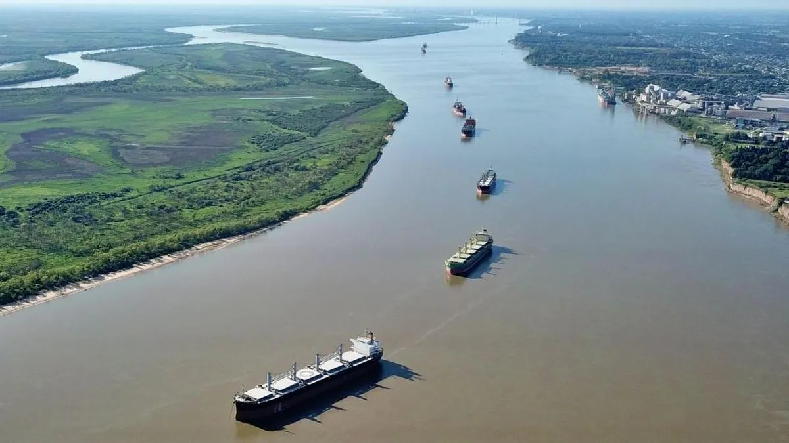

Una hidrovìa es una vìa fluvial navegable, un rìo o un conjunto de rìos interconectados , que se utiliza para el transporte de mercancìas.Estas vías se optimizan con infraestructura como dragado y señalización para facilitar la navegación continua. Además, se integran con otros modos de transporte y con el comercio exterior de los países que la utilizan.

hidrovias mas importantes de argentina
Las hidrovias mas importantes de Argentina son aquellas que conforman la hidrovìa Paraguay-Paranà. Unas de estas son:
Barranqueras: El Puerto de Barranqueras, ubicado estratégicamente en el centro de esta hidrovía, juega un papel crucial como nodo de transporte de cargas, especialmente productos agrícolas como la soja.
Reconquista: Una importante vía navegable que conecta varios países de Sudamérica y facilita el transporte de mercancías. La ciudad de Reconquista, en la provincia de Santa Fe, Argentina, se beneficia directamente de esta vía fluvial, ya que le proporciona una salida competitiva para sus productos.
Rosario: un importante corredor fluvial para el transporte de mercancías, especialmente granos. Rosario es un nodo clave en esta vía navegable, con numerosas terminales portuarias que conforman un importante complejo agroexportador.
Santa Fè: Atraviesa la provincia de Santa Fe, extendiéndose desde la ciudad de Santa Fe hasta el océano. Este tramo es crucial para el transporte de cargas, especialmente granos, y Santa Fe busca potenciar su capacidad portuaria para aprovechar esta vía de navegación.
Villa Constituciòn: Se encuentra estratégicamente ubicada sobre este corredor. La ciudad cuenta con un puerto importante que se beneficia de su acceso a la hidrovía, facilitando la conexión con países del Mercosur y puertos de ultramar.